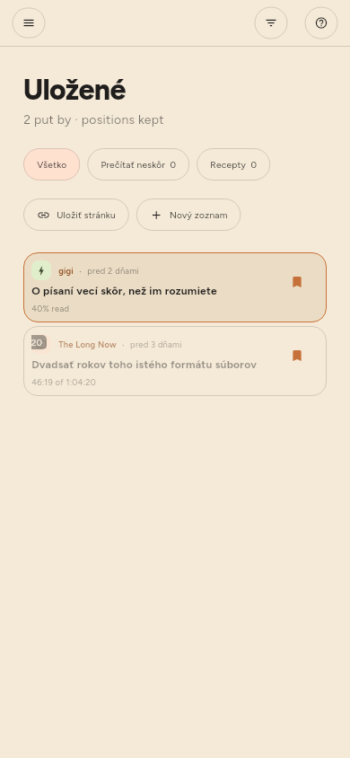

← Hľadanie · Obsah · Správa zdrojov →
Uchovávanie
Uložiť v čítačke alebo s zo zoznamu. Uložené články sú vyňaté zo všetkého, čo uvoľňuje miesto.
Zoznamy (len Premium)
Uložené je jeden zoznam a môžete si vytvoriť koľko chcete ďalších — podľa témy, podľa toho, čo s článkami chcete urobiť, akokoľvek triedite. Sú na polici vľavo v časti Zoznamy a vedľa názvu každého je, čo obsahuje.

| Ak chcete | Urobte |
|---|---|
| Vytvoriť zoznam | + pri nadpise Zoznamy, alebo Nový zoznam v ponuke ukladania |
| Niečo doň pridať | Uložiť zaradí do zoznamu, ktorý je na polici vyplnený |
| Vybrať iný zoznam | ▾ vedľa Uložiť, kliknutie pravým tlačidlom alebo podržanie |
| Znova to odobrať | Znova Uložiť, v zozname, kde je zaradené |
| Premenovať alebo odstrániť zoznam | Jeho koliesko na polici, rovnako ako pri kanáli |
Uložiť ukladá do zoznamu, ktorý ste vybrali naposledy. Výber zoznamu z ponuky článok zaradí a zároveň z toho zoznamu urobí ten, ktorý odvtedy používa obyčajné ukladanie — polica ukazuje ktorý, vyplnením jeho záložky. Kým nevyberiete inak, je to Uložené, čo vždy znamenalo ukladanie.
Článok môže byť vo viacerých zoznamoch naraz a odobratie z jedného ostatné nezmení. Samotné Uložené sa nedá premenovať ani odstrániť: obyčajné ukladanie musí mať kam ísť a všetky zariadenia sa zhodnú práve na ňom.
Odstránenie zoznamu ponechá články, ktoré v ňom sú, pokiaľ ich ešte drží kanál alebo iný zoznam — rovnaké pravidlo ako pri odstránení kanála. Odstránenie zdroja uložené články nechá tak a pred odstránením zdroja si zapíše, odkiaľ pochádzajú.
Zoznamy sa prenášajú medzi vašimi zariadeniami aj s článkami, ktoré v nich sú.